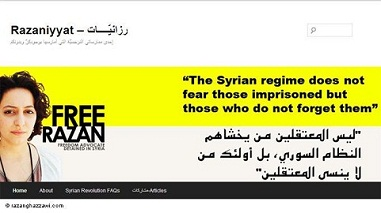

|
|

رزان، بلاگر زندانی: زندانیان سوریه را از یاد نبرید
سه شنبه22 آذر 1390
«رژیم سوریه از زندانیان نمیترسد اما از آنهایی که زندانیان را از یاد نمیبرند، در هراس است.» این جمله را رَزان غزاوی، زن جوان بلاگر سوری به دوستانش گفته بود. او خود یکشنبه (چهارم دسامبر) دستگیر شد. جمله او حالا سر فصل فعالیتهای آزادیخواهان سوری فضای سایبر است.
با هشتگ #freerazan میتوان به آخرین اطلاعات درباره رزان غزاوی دسترسی یافت. یکی از توییتها به آخرین وضعیت او اشاره دارد: «امروز (یکشنبه، یازدهم دسامبر) قرار بود دادگاه رزان برگزار شود. اما خبری نشد. یک تست دیگر برای سنجش اعصاب خانواده او! ما در افکارمان با آنها و خانوادههای دیگر زندانیان سوری و همه جهان هستیم.»
رزان غزاوی، بلاگر ۳۱ ساله سوری- آمریکایی ساکن سوریه، روز یکشنبه گذشته در مرز سوریه و اردن توسط پلیس دستگیر شد. او در حال ترک کشور به قصد شرکت در نشست مدافعان آزادی رسانه در دنیای عرب بود که در عمان برگزار میشد. رزان از ۲۰۰۹ وبلاگ مینویسد (http://razanghazzawi.com ) و عمومآ مطالب وبلاگش درباره نقض آزادی بیان آنلاین در کشورهای عربی و بهویژه سوریه است. اکانت توییتر او (@RedRazan.) نزدیک به پنج هزار نفر دنبالکننده ثابت دارد. او همچنین مسئول امور رسانه در مرکز رسانه و آزادی بیان سوریه (SCM) است. http://www.scm.bz
یکی از عکسهای منتشر شده مربوط به دستگیری رزان، همایشی را در شهر استانبول نشان میدهد که فعالان حوزه آزادی بیان عکسهای رزان جوان را در دست دارند. همایشی که با یک مرز فاصله انجام میگیرد اما یادآور اعتقاد عمومی به جمله رزان است که دیکتاتورها از مدافعان زندانیان میهراسند.

نام رزان اکنون در کنار نام علا عبدالفتاح، بلاگر مصری زندانی، در جهان وب تکرار میشود و یادآور وضعیت بغرنج آزادی بیان آنلاین در جهان عرب است، چه کشورهائی که در آنها انقلاب رخ داده و چه کشورهائی که در آن هنوز معترضان در تکاپوی انقلاب هستند. سازمان ملل میگوید تعداد کشتهشدههای اعتراضات علیه رژیم اسد به بیش از ۴ هزار نفر رسیده است.
بخوانید: علا، وبلاگنویس زندانی مصری: «انقلاب مصر ربوده شد»
بنا بر گزارش ماه گذشته مرکز رسانه و آزادی بیان سوریه، در فاصله بین فوریه و اکتبر ۲۰۱۱، ۱۵ بلاگر بهخاطر نوشتن از خیزشمردمی سوریه دستگیر شدهاند. از این تعداد، تنها چهار نفرشان تا به حال به دادگاه رفتهاند. از سرنوشت دو نفر از آنها نیز خبری در دست نیست.
۱۸۰ کشته در زندانهای سوریه
«بازداشت بلاگر پیشروی سوری-آمریکایی به علت اقدامات صلحآمیز اصلاحطلبانهاش قدم رو به عقب دیگری بود که رژیم سوریه برداشت.» این بخشی از بیانیه سازمان عفو بینالملل است که ششم دسامبر درباره رزان غزاوی منتشر شد.
در بخشی دیگر از بیانیه سازمان عفو بینالملل آمده است: «دولت سوریه متعهد شد همه بازداشتیهایی را که به علت شرکت در وقایع جاری دستگیر شدهاند، آزاد کند. اما هزاران نفر همچنان پشت میلهها هستند و اکنون نیز رزان غزاوی که به علت فعالیتهایش برای آزادی بیان شناخته شده، به آنها اضافه شده است.»
دولت سوریه در دوم ماه نوامبر امسال به اتحادیه عرب متعهد شده بود تا تمامی زندانیان را آزاد کند، امری که تاکنون اتفاق نیفتاده است.
در این بیانیه رزان غزاوی یک زندانی عقیدتی شمرده شده و به بازداشت وی در انفرادی اعتراض شده است. آزادی فوری و بیشرط او پیش از آنکه متهم به جرمی شود، خواست اصلی سازمان عفو بینالملل است.
سازمان عفو بینالملل تاکید میکند که با شروع تظاهرات مردمی در سوریه از ماه مارس (اسفند) گذشته، هزاران نفر به زندان افتادهاند. از آن میان، بسیاری بیهیچ امکان ارتباطی در مکانهای نامشخص نگهداری میشوند. عفو بینالملل در این مدت اسامی ۱۸۰ نفر را که در زندانهای سوریه کشته شدهاند، دریافت کرده است.
سوریه مسئول جان بلاگر زندانی
دستگیری رزان غزاوی باعث اوجگیری درخواستهای آنلاین برای آزادی دیگر زندانیان خصوصاَ زندانیان قربانی نبود آزادی بیان در سوریه شده است. مرکز رسانه و آزادی بیان سوریه در بیانیهای اعلام کرده است که این مرکز درخواست میکند تا مسئولان سوری اقدامات سیستماتیک علیه بلاگرها، روزنامهنگاران و شهروندان سوری را متوقف کنند:«مرکز رسانه و آزادی بیان سوریه میخواهد تا رزان غزاوی و دیگر زندانیان در سوریه سریعاَ آزاد شوند و تاکید میکند ضروریست تا مقامات سوریه به تعهدات بینالمللی خود از قبیل کنوانسیونها و معاهدات بینالمللی احترام بگذارند.»
بنا بر گزارشهای مرکز رسانه و آزادی بیان سوریه، در چند ماه گذشته «جنگ علیه رسانهها» در سوریه شدت گرفته است. چیزی که نشان از وضعیت قابل تامل روزنامهنگاران و بلاگرهای این کشور دارد.
گزارشگران بدون مرز در روز سوم ماه مه، روز جهانی آزادی مطبوعات، بر دیوار سفارت سوریه در پاریس نوشت: «جوهر باید جاری شود، نه خون.»
از آن زمان تا کنون اما اتفاق مثبتی در این کشور رخ نداده و دستگیری و شکنجه ادامه دارد. مرکز رسانه و آزادی بیان سوریه میگوید که دولت سوریه مسئول هر گونه آسیب روحی یا جسمی محتمل برای رزان غزاوی در زندان است.